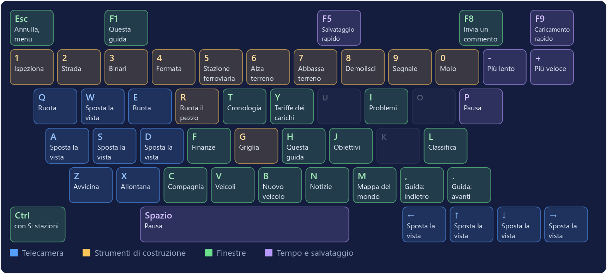

Comandi
Tastiera, mouse e trackpad, su Windows e su Mac.
I tasti colorati fanno qualcosa. Il colore indica di che tipo.


Spostare la vista
| Mouse | Trackpad | Tastiera | |
|---|---|---|---|
| Sposta la vista | Trascina con il tasto destro. Con Ispeziona, anche con il sinistro. | Scorri con due dita. | W A S D o le frecce. |
| Zoom | Gira la rotella. | Pizzica, o tieni premuto Ctrl e scorri. | Z e X, o Page Up e Page Down. |
| Ruota | Trascina con il tasto centrale, o tieni premuto Alt e trascina. | Tieni premuto Alt e scorri di lato. | Q e E, un quarto di giro ciascuno. |
- La vista scorre anche quando il mouse tocca il bordo dello schermo. Puoi disattivarlo in Impostazioni.
- Preferisci fare lo zoom scorrendo sul trackpad? Attiva Zoom con lo scorrimento a due dita in Impostazioni; allora Ctrl e scorrimento spostano la vista.
Costruire e ispezionare
- Tasto sinistro: usa lo strumento attuale. Clicca per posizionare, trascina per costruire linee e aree.
- Clic destro: annulla. Il primo clic annulla il trascinamento in corso, il successivo mette via lo strumento.
- Esc fa lo stesso, poi chiude la finestra in primo piano, poi apre il menu di gioco.
- R ruota una stazione, un deposito o un aeroporto prima di posizionarlo. Con uno strumento ponte cambia lo stile del ponte.
- Con Ispeziona, il puntatore diventa una mano sopra tutto ciò che puoi aprire, e un anello indica il veicolo che un clic aprirebbe. Dove più cose si sovrappongono, clicca di nuovo per passare alla successiva.
- Tieni il puntatore su un veicolo e il suo percorso viene disegnato sulla mappa nel colore della sua compagnia, con le fermate numerate in ordine. Resta visibile finché la finestra del veicolo è aperta.
- O scorre i livelli della mappa: valutazione delle stazioni, carico in attesa, copertura (quali case e industrie raggiungono le tue stazioni) e valore del terreno. Il pulsantino sulla minimappa li elenca, una legenda spiega i colori e Esc spegne il livello.
- L'ultimo livello, Problemi, mette una puntina su tutto ciò che è nella lista dei Problemi: passa il puntatore su una puntina per vedere cosa non va, cliccala per aprirlo.
- Ponti, gallerie, depositi, catenaria, aeroporti, Livella terreno e gli strumenti Collega non hanno un tasto: sceglili dal loro gruppo nella barra degli strumenti.
- Ctrl+Z annulla la tua ultima costruzione e restituisce i soldi. Vedi Terreno e demolizioni.
Windows e Mac
Il gioco è uguale su entrambi. Cambiano solo questi tasti:
| Windows, Linux | Mac | |
|---|---|---|
| Stazioni | Ctrl+S | ⌘S |
| Linee | Ctrl+L | ⌘L |
| Annullare una costruzione | Ctrl+Z | ⌘Z |
| Salvataggio rapido | F5 o Ctrl+Shift+S | ⇧⌘S |
| Caricamento rapido | F9 o Ctrl+Shift+L | ⇧⌘L |
| Schermo intero | F11 o Alt+Enter | ⌃⌘F |
| Invia un commento | F8 | fn+F8, o il menu di gioco |
| Ruotare trascinando | Alt | ⌥ Option |
| Clic destro | Tasto destro | Tasto destro, o Ctrl + clic |
| Zoom scorrendo sul trackpad | Ctrl | ⌘ Command |
| Cerca un argomento in questa guida | Ctrl+F | ⌘F |
Tempo
- Spazio o P mette e toglie la pausa. Puoi costruire mentre il gioco è in pausa.
- + e - cambiano la velocità: normale, x2, x4, x8. A velocità normale un giorno dura circa 2 secondi.